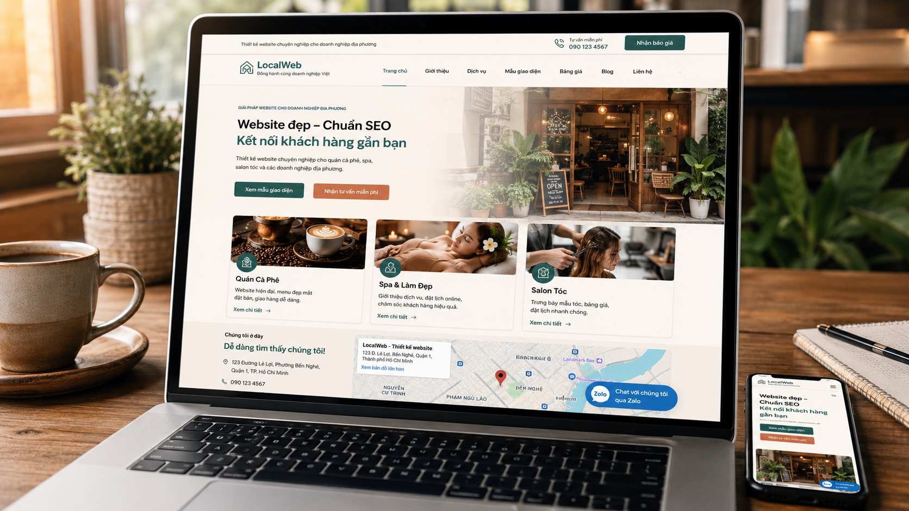
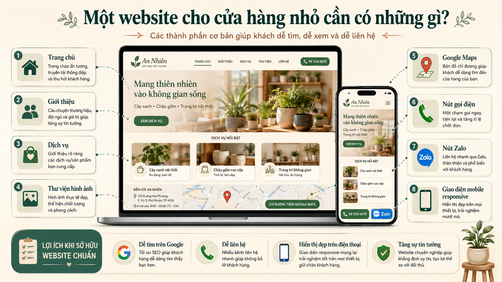

Một Website Cho Cửa Hàng Nhỏ Cần Có Những Gì? 9 Thành Phần Quan Trọng Giúp Khách Hàng Tin Tưởng Hơn
Nếu bạn đang chuẩn bị mở quán cà phê, spa, salon tóc hoặc một cửa hàng dịch vụ nhỏ tại TP.HCM, có thể bạn đã từng tự hỏi:
"Website của mình cần có những gì?"
Đây là một câu hỏi rất phổ biến. Nhiều chủ cửa hàng lần đầu làm website thường nghĩ rằng website phải có thật nhiều tính năng mới chuyên nghiệp. Nhưng thực tế, điều khách hàng cần không phải là một website phức tạp.
Điều họ cần là tìm được thông tin nhanh chóng, biết cửa hàng của bạn ở đâu và cảm thấy đủ tin tưởng để liên hệ.
Vậy một website cho cửa hàng nhỏ cần có những gì để vừa hiệu quả vừa tiết kiệm chi phí? Hãy cùng Duyên Lành Web tìm hiểu trong bài viết này.

Vì Sao Chủ Cửa Hàng Nhỏ Thường Bối Rối Khi Làm Website?
Khi tìm hiểu về website, bạn có thể bắt gặp rất nhiều thuật ngữ:
- Landing Page
- Hosting
- SEO
- CRM
- Booking System
- Database
- CMS
Điều này khiến nhiều người nghĩ rằng làm website là việc phức tạp và tốn kém.
Thực tế, phần lớn quán cà phê, spa, salon tóc hoặc cửa hàng dịch vụ địa phương không cần một hệ thống lớn ngay từ đầu.
Điều quan trọng nhất là website phải giúp khách hàng:
- Tìm thấy bạn trên Google
- Biết bạn đang bán gì
- Xem hình ảnh thực tế
- Liên hệ nhanh chóng
Nếu làm được những điều đó, website đã hoàn thành tốt nhiệm vụ của mình.
Website Không Cần Quá Phức Tạp
Một sai lầm khá phổ biến là cố gắng đưa thật nhiều tính năng vào website ngay từ đầu.
Ví dụ:
- Đặt lịch tự động
- Hệ thống thành viên
- Quản lý điểm thưởng
- Chatbot phức tạp
- Hệ thống quản trị khách hàng
Trong khi đó, nhiều cửa hàng vẫn chưa có:
- Google Maps rõ ràng
- Hình ảnh chất lượng
- Thông tin liên hệ nổi bật
Một website đơn giản nhưng được sắp xếp hợp lý thường mang lại hiệu quả tốt hơn rất nhiều.
9 Thành Phần Quan Trọng Một Website Cửa Hàng Nhỏ Nên Có

1. Trang Chủ Rõ Ràng Và Dễ Hiểu
Trang chủ là nơi khách hàng nhìn thấy đầu tiên.
Trong vòng vài giây, họ cần biết:
- Bạn là ai
- Bạn cung cấp dịch vụ gì
- Cửa hàng ở đâu
- Làm sao để liên hệ
Ví dụ:
Nếu là quán cà phê:
Quán cà phê sân vườn tại Thủ Đức — Không gian yên tĩnh cho học tập và làm việc.
Nếu là spa:
Spa chăm sóc da chuyên sâu tại Quận 7.
Thông điệp càng rõ ràng, khách hàng càng dễ ở lại.
2. Trang Giới Thiệu Về Cửa Hàng
Nhiều chủ cửa hàng bỏ qua phần này.
Nhưng thực tế, khách hàng thường muốn biết:
- Ai đang vận hành cửa hàng
- Cửa hàng hoạt động từ khi nào
- Giá trị và phong cách phục vụ
Một câu chuyện chân thật thường tạo sự kết nối tốt hơn nhiều so với những lời quảng cáo quá hoa mỹ.
3. Trang Dịch Vụ Hoặc Sản Phẩm
Đây là phần quan trọng nhất.
Khách hàng cần biết:
- Bạn đang cung cấp gì
- Giá tham khảo
- Hình ảnh minh họa
- Lợi ích của dịch vụ
Ví dụ:
Đối với salon tóc:
- Cắt tóc nam
- Uốn tóc nữ
- Nhuộm tóc
- Phục hồi tóc
Đối với spa:
- Chăm sóc da cơ bản
- Điều trị mụn
- Massage thư giãn
Thông tin càng rõ ràng, khả năng khách liên hệ càng cao.
4. Hình Ảnh Thực Tế
Hình ảnh là yếu tố ảnh hưởng rất lớn đến quyết định của khách hàng.
Một website nên có:
- Hình ảnh cửa hàng
- Hình ảnh sản phẩm
- Hình ảnh khách hàng thực tế
- Không gian bên trong
Đặc biệt với quán cà phê, spa, salon tóc — khách hàng gần như luôn xem hình ảnh trước khi quyết định ghé thăm.
5. Google Maps
Đây là thành phần cực kỳ quan trọng đối với SEO địa phương.
Khách hàng tại TP.HCM thường tìm kiếm:
- quán cà phê gần đây
- spa gần tôi
- salon tóc quận Bình Thạnh
Nếu website tích hợp Google Maps, khách hàng có thể xem vị trí, tìm đường và gọi điện trực tiếp. Điều này giúp tăng đáng kể khả năng chuyển đổi.
Tham khảo thêm: cách đưa cửa hàng lên Google Maps miễn phí.
6. Nút Gọi Điện Và Zalo
Khách hàng không muốn mất nhiều bước để liên hệ.
Website nên có:
- Nút gọi điện nổi bật
- Nút Zalo
- Nút Messenger (nếu cần)
Chỉ với một lần chạm, khách hàng có thể kết nối ngay với cửa hàng. Đây là giải pháp rất phù hợp với mô hình website tĩnh mà nhiều cửa hàng nhỏ đang sử dụng.
7. Form Liên Hệ Đơn Giản
Không cần một hệ thống đăng ký phức tạp.
Một form cơ bản gồm:
- Họ tên
- Số điện thoại
- Nội dung cần tư vấn
Đã đủ để khách hàng gửi yêu cầu liên hệ. Đối với các website của Duyên Lành Web, form liên hệ luôn được thiết kế theo hướng đơn giản, dễ dùng và thân thiện.
8. Nội Dung Chuẩn SEO
Một website đẹp nhưng không ai tìm thấy sẽ khó phát huy hiệu quả.
Vì vậy, website nên có:
- Tiêu đề rõ ràng
- Mô tả dịch vụ chi tiết
- Bài viết chia sẻ hữu ích
- Nội dung tối ưu từ khóa địa phương
Ví dụ: Spa tại Quận 7, Salon tóc Thủ Đức, Quán cà phê Bình Thạnh. Đây là nền tảng giúp website xuất hiện trên Google.
Xem thêm: website tĩnh có SEO được không?
9. Hiển Thị Tốt Trên Điện Thoại
Hiện nay phần lớn khách hàng truy cập website bằng điện thoại.
Một website hiện đại cần:
- Tải nhanh
- Chữ dễ đọc
- Nút bấm lớn
- Hình ảnh hiển thị đẹp
Nếu website khó sử dụng trên điện thoại, khách hàng thường rời đi rất nhanh.
Website Và Fanpage Có Thay Thế Cho Nhau Không?
Đây là câu hỏi mà Duyên Lành Web nhận được khá thường xuyên.
Câu trả lời là: Không.
Fanpage và website nên hỗ trợ cho nhau.
Fanpage giúp:
- Tương tác hằng ngày
- Đăng bài nhanh
- Chạy quảng cáo
Website giúp:
- Tăng độ uy tín
- Xuất hiện trên Google
- Giới thiệu dịch vụ chuyên nghiệp
- Xây dựng thương hiệu lâu dài
Nói cách khác, fanpage giống như một gian hàng trên mạng xã hội, còn website là ngôi nhà riêng của thương hiệu. Đọc thêm: có fanpage rồi có cần website không?
Những Thành Phần Chưa Cần Thiết Với Cửa Hàng Nhỏ
Nếu ngân sách còn hạn chế, bạn chưa nhất thiết phải đầu tư ngay:
- Hệ thống thành viên
- Ứng dụng riêng
- CRM phức tạp
- Booking tự động
- Hệ thống bán hàng lớn
Thay vào đó, hãy tập trung vào:
- Nội dung tốt
- Hình ảnh đẹp
- Google Maps
- SEO địa phương
- Trải nghiệm người dùng
Đây mới là những yếu tố tạo ra hiệu quả thực tế trong giai đoạn đầu.
Chi Phí Làm Website Có Phụ Thuộc Vào Những Thành Phần Này Không?
Có. Càng nhiều tính năng, chi phí càng cao.
Tuy nhiên với quán cà phê, spa, salon tóc, cửa hàng dịch vụ — một website gọn gàng gồm:
- Trang chủ
- Giới thiệu
- Dịch vụ
- Liên hệ
- Google Maps
- Nút Zalo
Đã đủ để bắt đầu xây dựng sự hiện diện trực tuyến chuyên nghiệp.
Xem chi tiết: thiết kế website 3 đến 8 triệu gồm những gì? hoặc bảng giá thiết kế website.
Bạn muốn bắt đầu một website nhỏ nhưng tử tế?
Duyên Lành Web có thể giúp bạn xây dựng một website rõ ràng, dễ dùng, chuẩn mobile và phù hợp với ngân sách của cửa hàng nhỏ.
Duyên Lành Web Đồng Hành Cùng Các Cửa Hàng Nhỏ
Tại Duyên Lành Web, chúng tôi tin rằng không phải cửa hàng nào cũng cần một website phức tạp.
Điều quan trọng hơn là website phù hợp với nhu cầu thực tế của chủ cửa hàng. Một website đơn giản, rõ ràng, tải nhanh và dễ sử dụng thường mang lại hiệu quả bền vững hơn rất nhiều so với một website nhiều tính năng nhưng khó quản lý.
Nếu bạn đang chuẩn bị xây dựng website cho quán cà phê, spa, salon tóc hoặc dịch vụ địa phương, hãy bắt đầu từ những thành phần thật sự cần thiết. Xem thêm: dịch vụ thiết kế website cho cửa hàng nhỏ.
FAQ — Câu Hỏi Thường Gặp
Website cửa hàng nhỏ có cần nhiều trang không?
Không nhất thiết. Từ 4–6 trang cơ bản đã đủ cho phần lớn cửa hàng nhỏ.
Website có cần blog không?
Có. Blog giúp tăng khả năng xuất hiện trên Google và tạo thêm cơ hội tiếp cận khách hàng.
Website tĩnh có phù hợp với cửa hàng nhỏ không?
Có. Website tĩnh tải nhanh, dễ quản lý và phù hợp với nhiều mô hình kinh doanh địa phương.
Chỉ dùng fanpage có được không?
Được, nhưng bạn sẽ bỏ lỡ lượng khách hàng tìm kiếm trực tiếp trên Google. Nên có cả hai để hỗ trợ lẫn nhau. Xem thêm: có fanpage rồi có cần website không?
Website có giúp xuất hiện trên Google Maps không?
Website hỗ trợ rất tốt cho Local SEO khi kết hợp với hồ sơ Google Business Profile.
Bao lâu nên làm website sau khi mở cửa hàng?
Càng sớm càng tốt, lý tưởng nhất là trước hoặc ngay sau khi khai trương.
Kết Luận
Khi tìm hiểu một website cho cửa hàng nhỏ cần có những gì, điều quan trọng không phải là thật nhiều tính năng, mà là những thành phần giúp khách hàng dễ dàng tìm thấy, tin tưởng và liên hệ với bạn.
Một website cơ bản nên có:
- Trang chủ rõ ràng
- Giới thiệu cửa hàng
- Dịch vụ hoặc sản phẩm
- Hình ảnh thực tế
- Google Maps
- Nút gọi điện và Zalo
- Form liên hệ đơn giản
- Nội dung chuẩn SEO
- Giao diện thân thiện trên điện thoại
Đó chính là nền tảng vững chắc để xây dựng sự hiện diện trực tuyến lâu dài cho bất kỳ cửa hàng nhỏ nào tại TP.HCM và Việt Nam.
Sẵn sàng xây dựng website cho cửa hàng của bạn?
Hãy bắt đầu bằng một website gọn đẹp, dễ xem trên điện thoại, có đầy đủ Google Maps, nút gọi và Zalo. Duyên Lành Web sẽ đồng hành cùng bạn từ bước đầu tiên.
Liên hệ tư vấn miễn phí